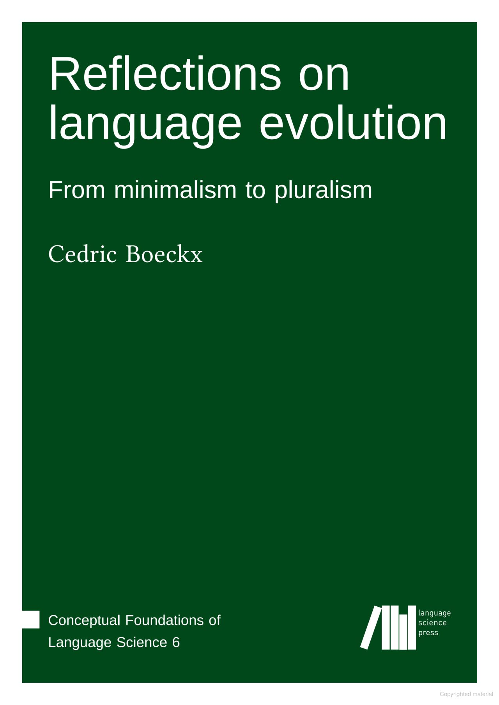

I wrote a review of the great Cedric Boeckx's book _Reflections on language evolution_ for Linguist LIST; in fact I wrote a review which was too long for Linguist LIST so I put it on PsyArXiv:
with the shorter version at LINGUIST List 32.3531.
I used the review as an opportunity to think a bit about what I think the field is trying to achieve. The book suggests that linguistics should be centred on the problem of how our language ability evolved and suggests that the method best suited to this problem is the use of paleo-genetic evidence. I believe that's premature, we are still sorting through the complicated legacy of the Chomskyan revolution, a complex set of interlinked ideas which mixes the distracting, formal grammars for example, and the profound: a focus on structure and its relation to neural processing and language learning in infants.